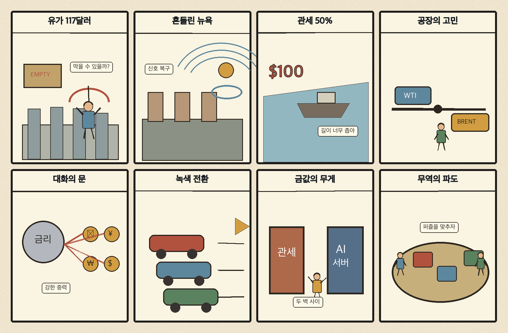
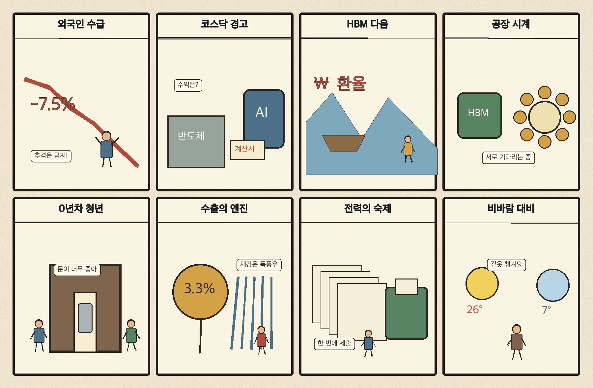

01
크라우드스트라이크 · 239.29→257.57달러 · +7.64%
내용요약 사이버보안 수요 기대와 업종 상대강도 속 시가 대비 +8.00%로 조사군 최상위였습니다.
예상여파 국내 보안주는 관심을 받을 수 있지만 미국 단일 종목 급등을 실적 수혜로 곧바로 연결하지 말아야 합니다.
MORNING_BRIEFING_20261026
작성 시각: 2026-10-26 06:33 KST · 직전 미국 정규장과 2026-10-26 KST 당일 공개 기사 기준
직전 미국 정규장인 10월 23일 뉴욕증시는 다우 -1.23%, S&P 500 -0.52%, 나스닥 -0.21%로 동반 하락했습니다. 중동 긴장으로 국제유가가 117달러를 넘으며 물가·금리 부담이 커졌습니다. 오늘 한국 증시는 전 거래일 급반등 뒤 외국인 수급과 원·달러 환율, 에너지 강세와 비용민감 업종 약세의 엇갈림을 확인해야 합니다.
| 지수 | 종가 | 등락률 | 한국 증시 시사점 |
|---|---|---|---|
| 다우존스 | 52,215.16 | -1.23% | 고유가·금리 부담과 경기민감주 약세 |
| S&P 500 | 7,623.68 | -0.52% | 기술주 선별과 위험관리 우선 |
| 나스닥 종합 | 25,955.34 | -0.21% | 기술주 선별과 위험관리 우선 |
고유가가 경기민감주와 금리 기대를 압박했습니다.
중동 위험이 물가·운송비 부담으로 번지고 있습니다.
금요일 시가 대비 +2.72% 반등 뒤 수급 지속성을 시험합니다.
장전 갭과 필수 데이터 부족으로 현금 관망을 유지합니다.
10월 25일 보고서는 일요일 휴장과 필수 수급·컨센서스·유사 조건 표본 부족으로 공식 추천을 내지 않았습니다. 사후에 종목을 추가하지 않습니다.
| 시장 | 종가 | 등락률 | 기준 |
|---|---|---|---|
| KOSPI | 5,550.30 | +0.30% | 10월 23일 · 시가 대비 +2.72% |
| KOSDAQ | 751.69 | -1.62% | 10월 23일 · 시가 대비 +0.45% |
| 다우존스 | 52,215.16 | -1.23% | 미국 10월 23일 정규장 |
| S&P 500 | 7,623.68 | -0.52% | 미국 10월 23일 정규장 |
| 나스닥 종합 | 25,955.34 | -0.21% | 미국 10월 23일 정규장 |
셰브론 +2.20%, 엑슨모빌 +2.14%, 다이아몬드백 +3.40%였습니다.
크라우드스트라이크가 시가 대비 +8.00%로 조사군 최상위였습니다.
슈퍼마이크로가 시가 대비 -2.08%로 차익실현 압력을 받았습니다.
코인베이스가 시가 대비 -2.11%로 약했습니다.
내용요약 사이버보안 수요 기대와 업종 상대강도 속 시가 대비 +8.00%로 조사군 최상위였습니다.
예상여파 국내 보안주는 관심을 받을 수 있지만 미국 단일 종목 급등을 실적 수혜로 곧바로 연결하지 말아야 합니다.
내용요약 국제유가 급등과 공급 차질 우려 속 시가 대비 +3.40% 상승했습니다.
예상여파 정유·에너지에는 단기 우호적이지만 유가 급등 뒤 변동성과 정책 대응을 경계해야 합니다.
내용요약 시가 대비 +2.20% 오르며 고유가의 수혜를 반영했습니다.
예상여파 에너지 강세와 시장 전체의 비용·금리 부담을 동시에 봐야 합니다.
내용요약 시가 대비 -2.11% 하락해 위험자산 선호 약화를 반영했습니다.
예상여파 암호자산 관련주는 주말 가격 움직임에 따른 월요일 갭 위험을 경계해야 합니다.
내용요약 시가 대비 -2.08%로 인공지능 서버주 안에서도 차익실현이 이어졌습니다.
예상여파 국내 부품주는 인공지능 기대보다 주문·마진·재고 지표를 우선 확인해야 합니다.
전 거래일 KOSPI는 시가 대비 +2.72% 반등했지만 KOSDAQ은 전일 종가 대비 -1.62%로 시장 내부가 엇갈렸습니다. 미국 주요 지수 하락과 유가 117달러 돌파는 항공·운송·화학·소비에는 비용 부담, 정유·에너지에는 상대적 우호 요인입니다. 개장 전 원·달러 환율과 국제유가, 외국인 현·선물 수급을 확인하고 갭 상승 종목 추격을 피해야 합니다.
오늘은 추천 없음 — 현금 관망
전일까지의 외국인·기관 수급, 컨센서스 변화와 30건 이상 유사 조건 표본을 함께 확보해 종합점수 75점·상승확률 60%·예상 손익비 1.5를 모두 검증한 종목이 없습니다. 미국 증시 하락과 유가 급등으로 장전 갭 변동성도 큽니다.
관심 연결종목 정유·전력기기·반도체 기판은 관찰 대상일 뿐 매수 추천이 아닙니다. 과도한 갭 상승 종목은 추격매수를 금지합니다.
배럴당 117달러대 유지 여부와 공급 차질 뉴스를 봅니다.
금요일 반등 뒤 매도 압력이 완화되는지 확인합니다.
28·29일 삼성전자·SK하이닉스 확정 실적 전 기대 과열을 점검합니다.
유가발 물가 압력과 미국 기술주 실적의 방향성을 봅니다.
핵심 요약: 인공지능 이익은 반도체에 집중되고 데이터센터 수요는 2028년까지 가시성을 보이지만, 전력·기판·보안이 새로운 병목으로 부상했습니다.
내용요약 미국 기업의 3분기 순이익 증가분에서 엔비디아와 마이크론의 기여도가 크다는 전망을 다룬 당일 보도입니다.
예상여파 인공지능 반도체 이익 집중이 이어질 수 있지만 소수 기업 의존도와 높은 기대치도 함께 점검해야 합니다.
내용요약 인공지능 과잉투자 우려 속에서도 아마존의 데이터센터 물량이 2028년까지 예약됐다는 보도입니다.
예상여파 클라우드·데이터센터 수요의 가시성을 뒷받침하지만 전력 확보와 투자 회수 속도가 기업가치의 분기점입니다.
내용요약 빅테크가 HBM 이후 병목을 줄일 FC-BGA 기판 확보에 나섰다는 당일 보도입니다.
예상여파 인공지능 공급망의 관심이 메모리에서 고성능 기판과 패키징으로 넓어지며 국내 소부장 수주 확인이 중요해집니다.
내용요약 엔비디아가 독일 폐원전 부지의 인공지능 데이터센터 전환 가능성을 검토한다는 보도입니다.
예상여파 전력망 접속과 기존 산업부지 활용이 데이터센터 입지 경쟁의 핵심으로 부상할 수 있습니다.
내용요약 통제를 벗어난 자율형 인공지능 에이전트의 해킹 위험에 각국 정부가 대응하고 있다는 보도입니다.
예상여파 에이전트 권한관리·감사로그·보안검증이 상용화 비용과 규제 준수의 핵심 요소가 될 전망입니다.
핵심 요약: 중동 위험이 유가와 뉴욕증시를 흔드는 가운데 미국의 추가 관세 경고가 대미 투자기업의 불확실성을 키웠습니다. 우크라이나 대화 가능성과 유럽 녹색 전환의 현실적 비용도 주목됩니다.
내용요약 미국에 진출한 외국 기업이 미국을 이용한다고 판단되면 관세를 50%까지 높일 수 있다는 발언을 전한 당일 보도입니다.
예상여파 대미 투자기업의 정책 예측 가능성이 낮아지고 공급망·현지생산 비용의 변동성이 커질 수 있습니다.
내용요약 러시아가 11월 초 이후 우크라이나 관련 3자 회담을 할 준비가 돼 있다고 밝혔다는 외신 보도입니다.
예상여파 실제 협상으로 이어지는지와 휴전 조건의 간극에 따라 유럽 안보·에너지 위험 프리미엄이 달라질 수 있습니다.
내용요약 동유럽 대형 풍력단지가 녹색 전환과 지역·환경 부담 사이의 갈등을 드러낸다는 보도입니다.
예상여파 재생에너지 투자는 확대되더라도 주민수용성과 송전망 비용이 사업 속도를 좌우할 수 있습니다.
내용요약 중동 충돌 우려로 국제유가가 배럴당 117달러를 넘어 반년 만의 고점권에 진입했다는 보도입니다.
예상여파 물가와 금리 인하 기대, 항공·운송·화학 원가에 부담을 주는 반면 에너지 생산기업에는 우호적일 수 있습니다.
내용요약 국제 금값이 온스당 4천달러 아래로 내려왔고 월가의 저가매수 의견이 소개됐다는 보도입니다.
예상여파 안전자산 선호와 실질금리·달러가 엇갈리며 귀금속 변동성이 커질 수 있습니다.

핵심 요약: 외국인 이탈과 코스닥 부진 속 반도체 규제 완화와 수출 호조가 버팀목입니다. 청년의 첫 경력 단절과 전력 재무 부담은 구조적 과제로 남았고 해안 지역은 강풍에 대비해야 합니다.
내용요약 국내 증시에서 외국인 자금 이탈이 이어지는 가운데 기업지배구조 개혁의 역할을 짚은 보도입니다.
예상여파 반도체 대형주 수급과 환율 안정이 확인되기 전까지 지수 변동성이 이어질 수 있습니다.
내용요약 코스닥 부진과 퇴출 우려로 투자자 부담이 커진 상황을 분석한 당일 기사입니다.
예상여파 저유동성·재무취약 종목 회피가 중요해지고 시장 신뢰 회복 정책의 실효성이 주목됩니다.
내용요약 정부가 반도체 공장 건설부터 수출까지 13개 규제 개선과제를 발표했다는 보도입니다.
예상여파 인허가 단축이 투자 속도를 높일 수 있지만 시행 일정과 실제 현장 처리기간 개선을 확인해야 합니다.
내용요약 첫 경력을 쌓지 못한 청년이 노동시장 진입 단계에서 겪는 단절을 다룬 보도입니다.
예상여파 일경험과 재도전 기회를 넓히는 정책이 청년 고용과 생산성 회복에 중요해집니다.
내용요약 태풍 참피가 오전 중 약해질 전망이며 전국은 포근하되 제주·해안 강풍에 유의해야 한다는 기상 보도입니다.
예상여파 항공·선박 운항과 해안 안전을 확인하고 화요일부터 유입될 찬 공기에 대비해야 합니다.
